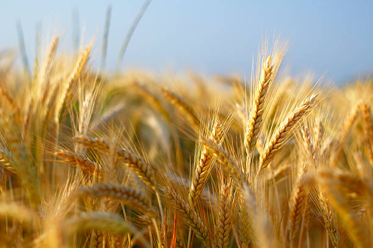
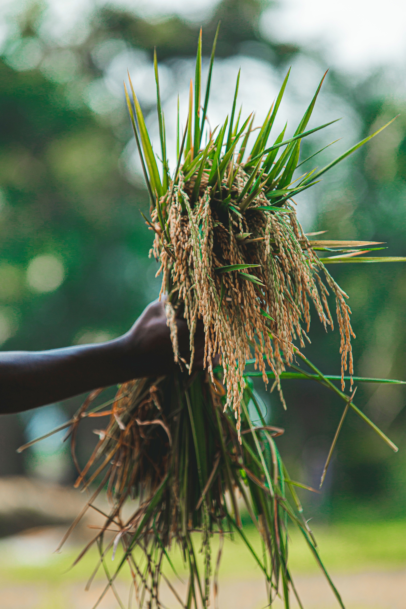
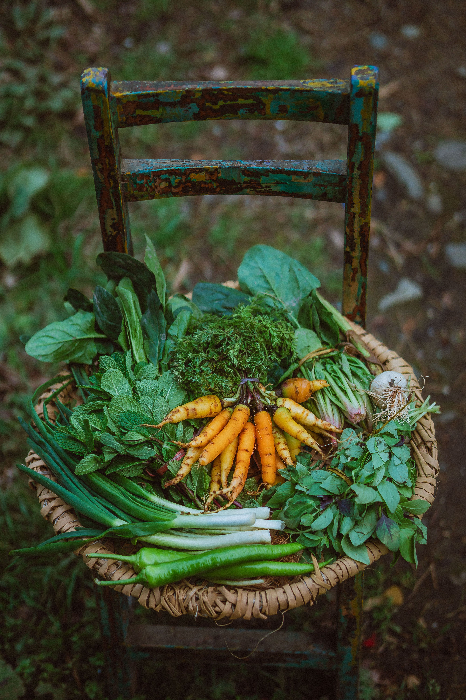
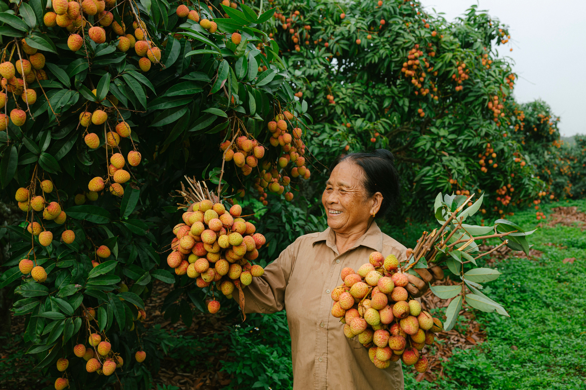
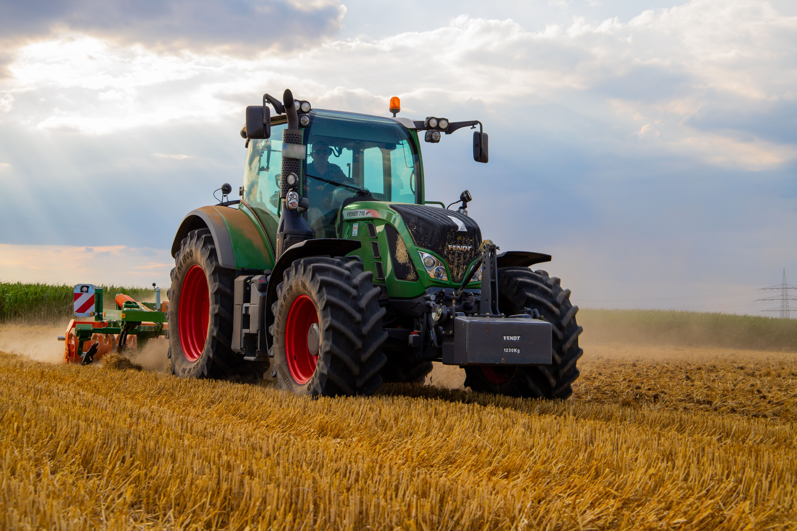
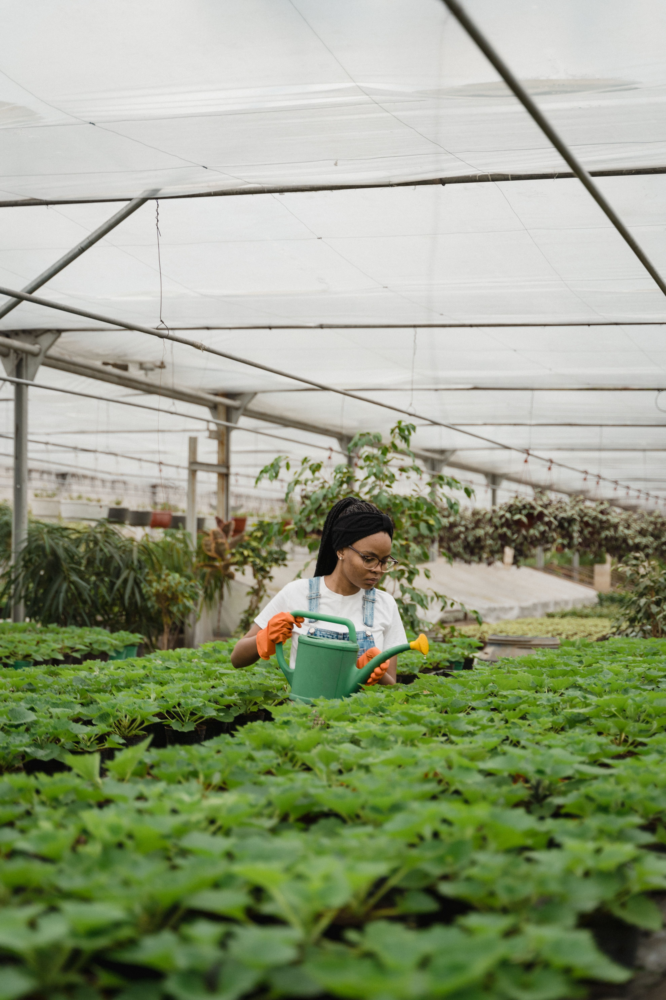

How Precision Farming is Reshaping Indian Agriculture
Discover how data-driven farming techniques are helping Indian farmers increase yield by up to 60% while reducing input costs.
Read Article →Stackly Agriculture delivers precision farming solutions, sustainable crop management, and cutting-edge agri-tech to help farmers produce more with less.

At Stackly Agriculture, we combine traditional farming wisdom with modern technology to deliver exceptional yield, sustainability, and food security across India and beyond.
From soil analysis to harvest automation, our end-to-end solutions empower smallholder farmers and large agribusinesses alike to thrive in a changing climate.
From crop consultancy to agri-drone operations, Stackly offers comprehensive agricultural services tailored to your land and goals.
Expert crop planning, variety selection, and field management for maximum yield and minimum waste across all seasons.
Learn more →IoT-powered drip and sprinkler systems with real-time soil moisture monitoring to cut water usage by up to 40%.
Learn more →Aerial crop scouting, precision pesticide spraying, and multispectral imaging to detect crop stress early.
Learn more →Comprehensive soil health testing with customised fertilizer plans for improved crop nutrition and land longevity.
Learn more →We cultivate and supply certified organic produce — farm fresh, nutritious, and traceable from field to table.

Staple GrainHigh-protein varieties grown under precision farming for superior flour quality and nutritional value.

OrganicLong-grain aromatic basmati cultivated with traditional methods and modern soil care.

SeasonalPesticide-free seasonal vegetables harvested at peak ripeness for maximum flavour and nutrition.

Export GradeExport-quality mangoes, bananas, and citrus grown in mineral-rich soil with drip irrigation.



Real stories from real farmers whose livelihoods we've helped transform.
Stackly's drip irrigation system cut our water bill by nearly half while our tomato yield went up by 35%. The team was professional and the installation was seamless.

The soil analysis report was eye-opening. With the customised fertilizer schedule, our paddy crop quality improved dramatically. Best agricultural consultancy we've used.

The drone scouting identified a fungal outbreak 10 days before it would've destroyed our crop. Stackly's fast intervention saved us lakhs. Truly indispensable service.

 Technology
Technology
Discover how data-driven farming techniques are helping Indian farmers increase yield by up to 60% while reducing input costs.
Read Article → Drones
Drones
How multispectral drone imaging helps detect crop diseases, nutrient deficiencies, and water stress weeks before visible symptoms.
Read Article → Organic
Organic
Thinking of switching to organic farming? Here's a practical, season-by-season roadmap with real cost and profit benchmarks.
Read Article →Join over 1,200 farmers who trust Stackly Agriculture for sustainable, profitable, and future-ready farming.